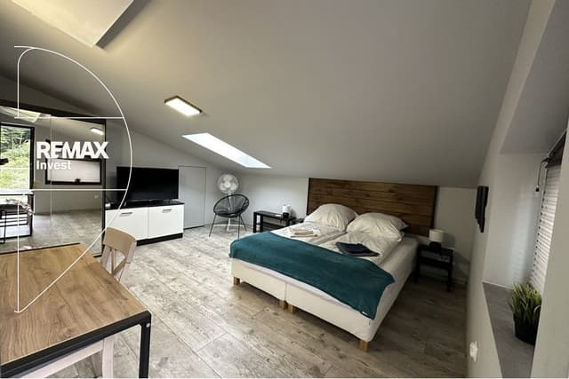
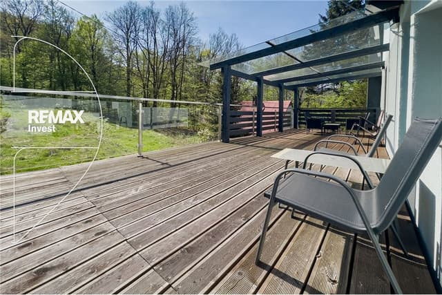

Start › Apartamenty
Apartamenty w Ustroniu-Jaszowcu: 80 i 100 m²
Dwa niezależne apartamenty w domu przy ul. Wczasowej 66A. Każdy ma własne wejście, kuchnię, łazienkę, tarasy i dwa miejsca parkingowe.
zdjęcie z ogłoszenia obiektu


parter · ok. 100 m²
Apartament Dolny - 6-8 osób
Największy apartament w domu - dla dwóch rodzin albo grupy rowerzystów. Trzy sypialnie, salon z kuchnią i cztery tarasy wokół domu.
| Powierzchnia | ok. 100 m² |
|---|---|
| Piętro | parter |
| Sypialnie | 3 sypialnie z łóżkami podwójnymi |
| Łazienka | duża łazienka z wanną i prysznicem + druga toaleta z umywalką |
| Tarasy | 4 tarasy na cztery strony świata, w tym 3 zadaszone |
| Liczba osób | 6-8 osób |
| Parking | 2 prywatne miejsca przy domu |
od 690 zł / noc, cena przykładowa
Sprawdź wolne dni


1 piętro · ok. 80 m²
Apartament Górny - 4-6 osób
Dla rodziny albo dwóch par. Dwie sypialnie, jasny salon z aneksem kuchennym i dwa tarasy z widokiem na las i góry.
| Powierzchnia | ok. 80 m² |
|---|---|
| Piętro | 1 piętro |
| Sypialnie | 2 sypialnie z łóżkami podwójnymi |
| Łazienka | duża łazienka z wanną i prysznicem |
| Tarasy | 2 tarasy na dwie strony świata |
| Liczba osób | 4-6 osób |
| Parking | 2 prywatne miejsca przy domu |
od 520 zł / noc, cena przykładowa
Sprawdź wolne dniCo jest w każdym apartamencie?
- Salon z aneksem kuchennym
- Pełne wyposażenie kuchni i jadalni
- Łazienka z wanną i prysznicem
- Duże przeszklenia z wyjściem na tarasy
- Okna trzyszybowe (remont w 2019 r.)
- Bania ogrodowa i wiata grillowa (wspólne)
- Dwa prywatne miejsca parkingowe
- Wi-Fi, pościel i ręczniki - do potwierdzenia
Wyposażenie według opisu obiektu w ogłoszeniu. Punkty oznaczone "do potwierdzenia" uzupełnimy z właścicielem.